Independent female fronted rock from the Netherlands
New single out “My Great Reset”
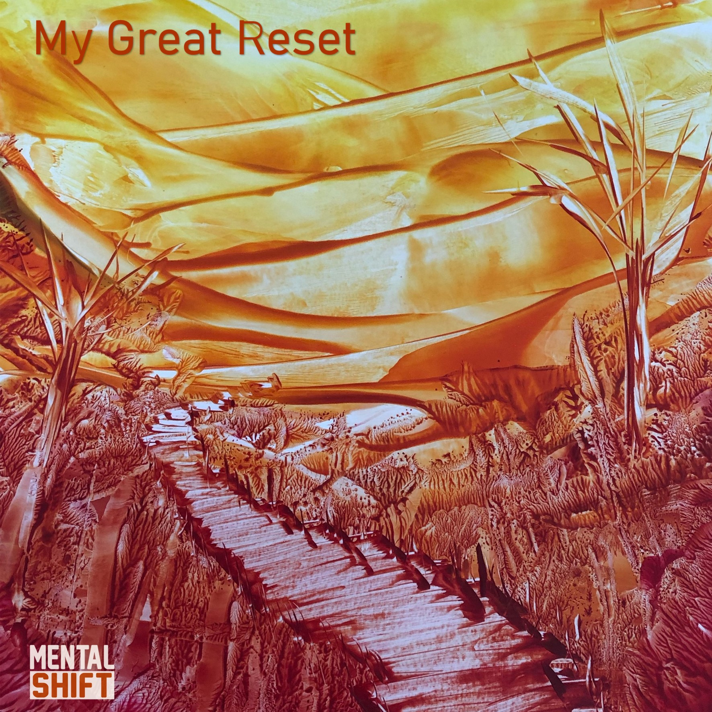Single “Endless”
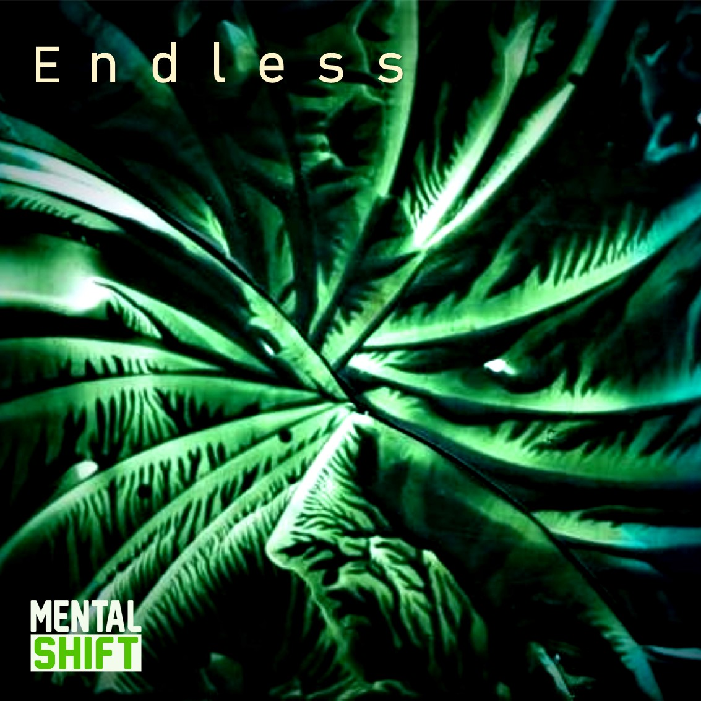Single “It's Time”
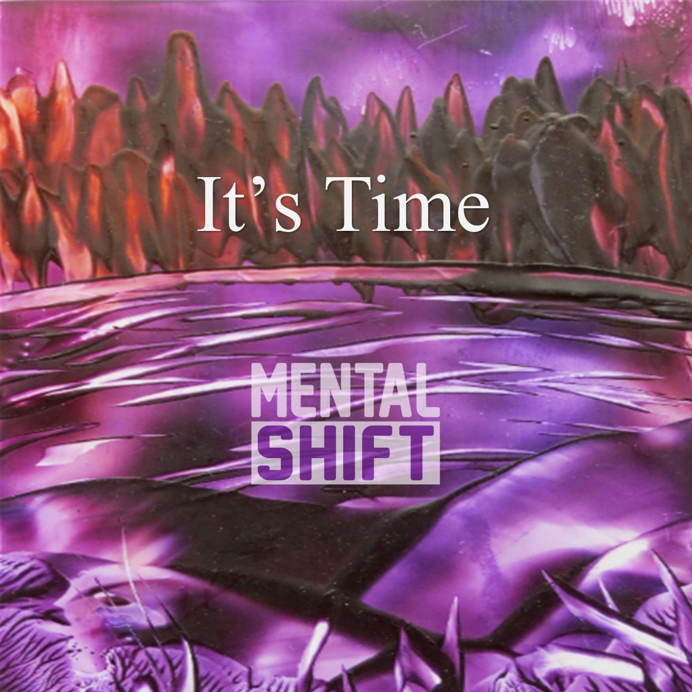Single “Déjà vu”
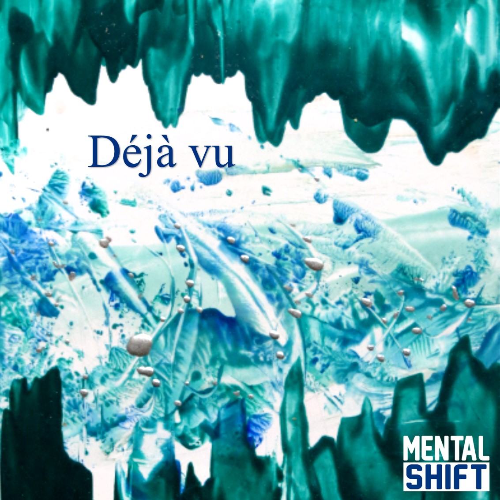Single “The Last Thing”
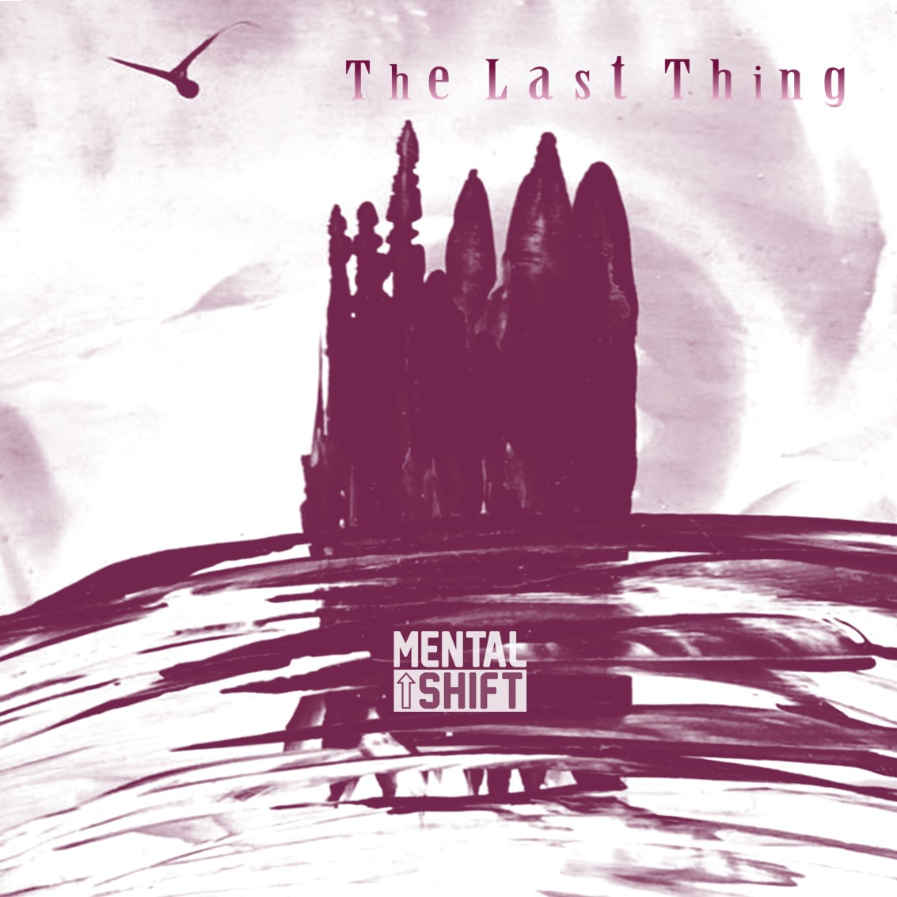Single “Winter”
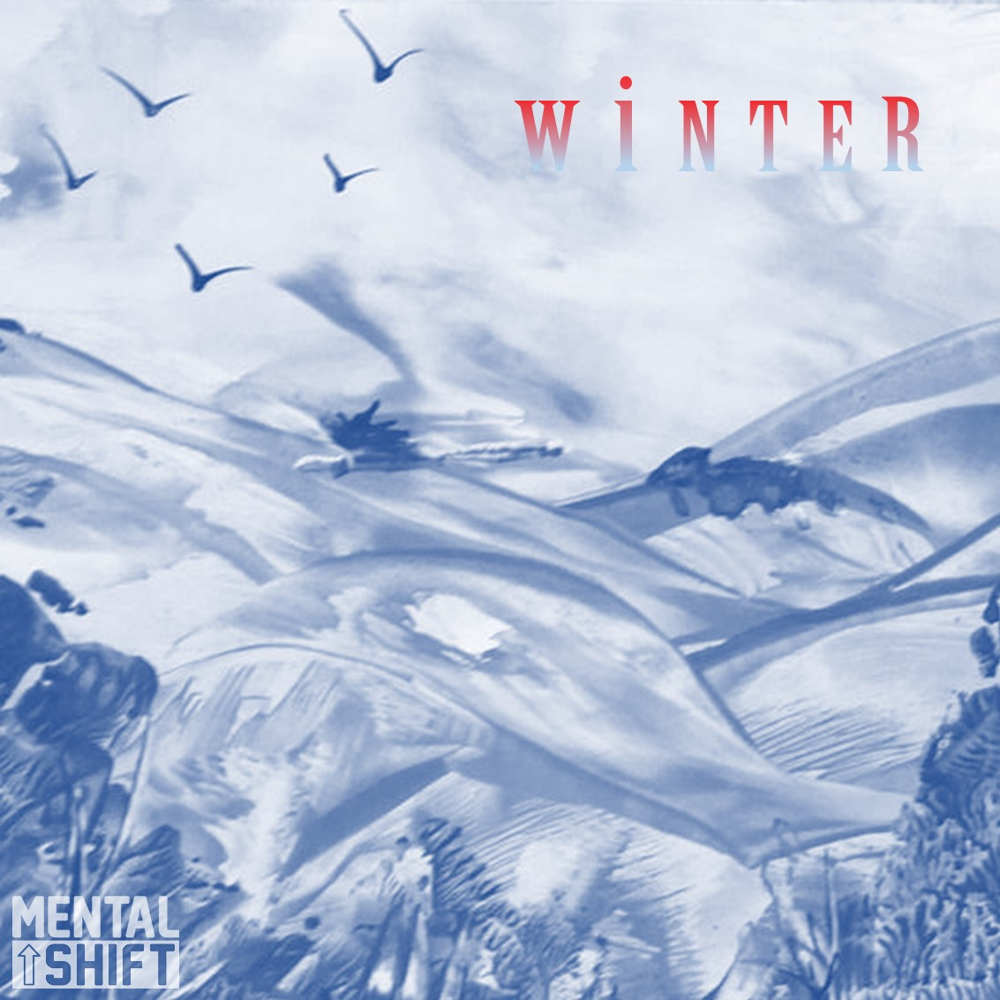Single "Too Much"
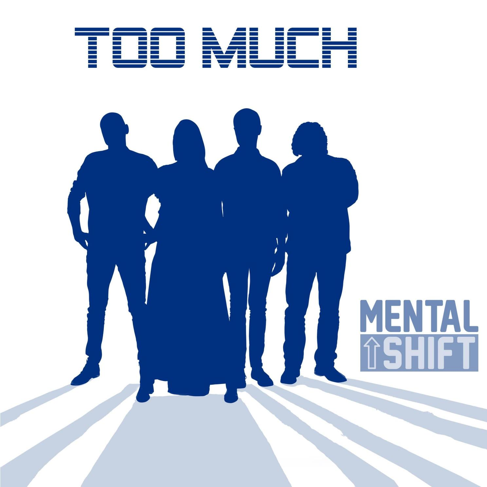Single "My Heavy Heart"
Check out our Media page for the video clip!
Album "Emergence"
With debut album ‘Emergence’ Dutch rockband ‘Mental Shift’ makes quite the appearance in the rock scene, hence the album title ‘Emergence’. Their sound is heavy but accessible. Recognisable melodies, heavy riffs and the ever changing voice of lead singer Daphne makes this a record you just keep on playing! Steady rock but also fragile songs all written straight from the heart. The meaningful narrative lyrics are sure to move you. Theme of the record is your own Mental Shift. The way you view the world you can control with your mind. Stay true to you, whether it’s love, friendship or a career. How does this all sound? Listen to our album and find out for yourself…
Download the album booklet here.
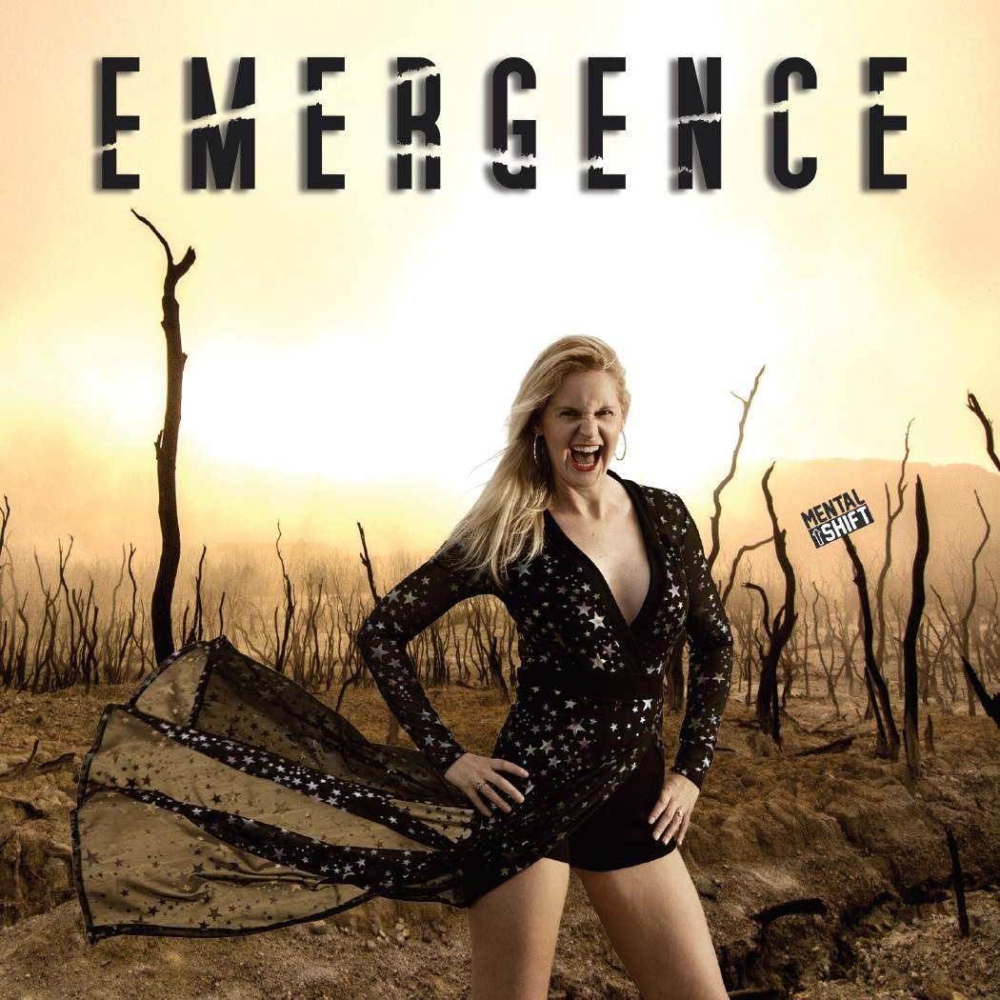The Band
Mental Shift is a female fronted alternative rock band from the Netherlands! Their sound has been described as a mix of Skunk Anansie, Kate Bush, Placebo, the Gathering and Blondie. While alternative in its core, the different musical backgrounds of the band members result in a mix of influences from pop, metal, alternative and rock. Lively melodics mostly midtempo rock beats, high pitched vocals, a solid drums and bass which leads to the very accessible, melodic, alternative rock of Mental Shift. A full debut album was released in 2018, with the singles Back to Live, Disclosure, Too Much and My Heavy Heart. Latest single releases are Winter, The Last Thing, Déjà vu Endless and finally the ballad My Great Reset, inspired by covid.
Line Up
Daphne Gobius du Sart – Lead Vocals, Songwriter, Lyrics
Daphne started her singing career at an early age, joining The Academy Of Vocal Arts in The Hague at the age of 8. This intensive vocal training allowed her to develop her voice and a solid understanding of music and singing in general. In releasing several albums and performing throughout Europe her passion for singing was awakened.
Through her teens and twenties she enjoyed singing lessons in pop (Musical Academy Leiden) and classical singing (Het Phondament The Hague). She also took lessons with Floor Jansen (Nightwish) to develop a more powerful style and learn belting techniques. She has been writing songs and lyrics for over ten years which she performed in several bands. Very experienced in live gigs she performed dozens of times at festivals and pop stages.
Hans Flikkema – Guitars
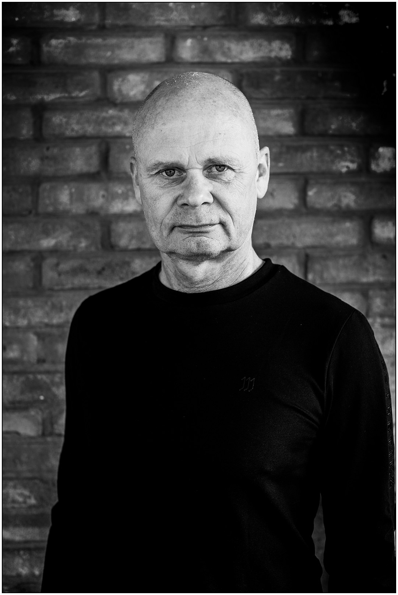Hans is playing the guitars in Mental Shift. He started playing classical guitar at the age of seven, inspired by the great Segovia. In high school, Hans got inspired by Deep Purple’s Richie Blackmore, Jethro Tull, Kayak, Uriah Heep, Alice Cooper’s Billion Dollar Babies, Peter Frampton, Stones Get their ya ya’s out, Rainbow, Sweet, Blondie etc. Stopped playing classical guitar, learned himself how to rock by playing three hours a day. Got his first 3 man band at the age of 15, creating own rock songs and sound. From that moment this band changed musical styles, line up and had several band names every few years. After 25 years of changes Hans finally quitted the scene and ended up toggling an acoustic guitar and rediscovered the classical guitar for a bit, while raising kids. From 2010 Hans started up again, trying covering classical rock songs and modern blues-rock, got a bit inspired by guys like John Mayer and Joe Bonamassa. Anyway covering is not his thing, now creating and recording new songs again in Mental Shift.
Michiel Flikkema – Drums

Michiel started playing drums at the age of 15. He learned playing the drums mainly autodidact and attended one year of education in jazz-feel drumming to improve his techniques for playing the style of drumming he likes best, inspired by Ian Paice, John Bonham, Steve Copeland and John Cogholan. Together with Hans he played in a band for about twenty years making alternative rock. After this a period of various music and theatre productions. The style he likes most is rock feel straight bold or massive symphonic. Playing drums is by far his most favorite energizer. Playing in Mental Shift is for him the ultimate experience in performing. Michiel is less composer but likes being on stage best and so eager he sometimes needs to be tamed.
Sascha van ‘t Hoog – Bass
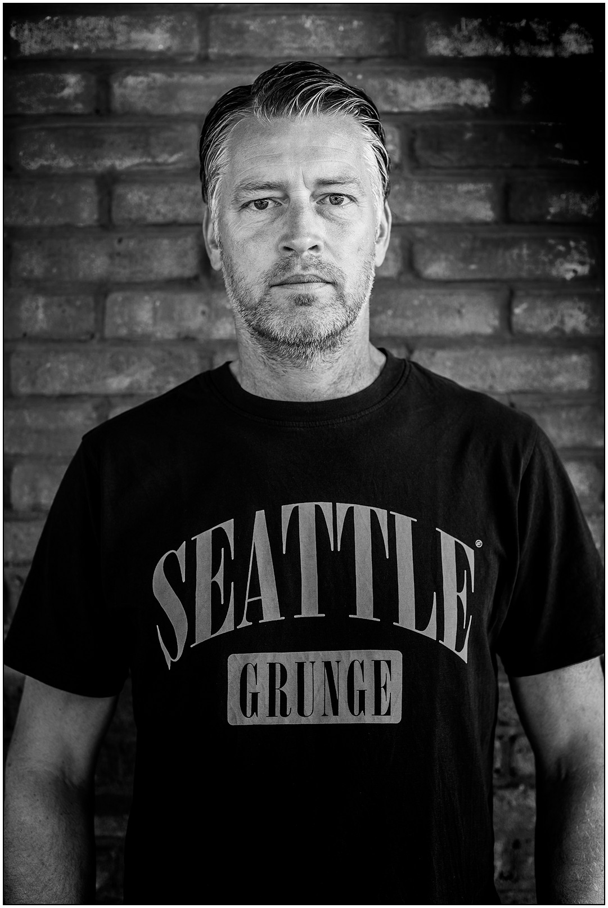Sascha is the steady bass player since summer 2020 in Mental Shift. Likes loud music mostly and playing the greatest rock songs.
Jeroen Koevoets – Guitars
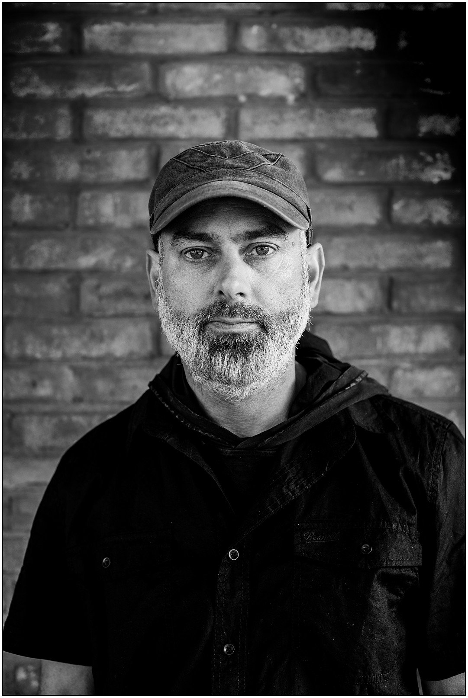Jeroen is a singer songwriter by nature. He has been involved with music from an early age, especially through his musical father, who played in a lot in bands. Jeroen got and still is inspired by bands like Pink Floyd, Soundgarden, Pearl Jam, Queens of the Stone age.
Events
Upcoming Shows
Previous Shows

Sat 15-10-2022 Mental Circus / Mental Shift / Alwaid @ B52 music club
Location: Aartrijkestraat 92, 8480 Eernegem, Belgium
Doors open: 20:00
Sat 23-04-2022 Mental Circus / Mental Shift / Alwaid @ B52 music club
Location: Aartrijkestraat 92, 8480 Eernegem, Belgium
Show Starts aprox.: 19:30
Sat 11-12-2021 Mental Shift & special guest Dew on the Van @ KOFA
Location: Zomerstraat 41, 3131 EW Vlaardingen
Show Starts aprox.: 14:00
Sun 22-12-2019 Mental Shift Acoustic sessions @ ATOS RTV
Location: Shopping Centre Walburg, ATOS Radio Zwijndrecht.
Time: 13:00-15:00
Sat 30-11-2019 Mental Shift & Hotel Charly 2 @ Saturnus Live Music
Location: Keizerstraat 58, 2584 BK Scheveningen
Show starts aprox.: 21:00
Sat 9-11-2019 Mental Shift Try Out @ KOFA
Location: Zomerstraat 41, 3131 EW Vlaardingen
Show starts aprox.: 23:00 after main show
Sat 11-05-2019 CatEaters DE & Mental Shift NL @ B52 music club
Location: Aartrijkestraat 92, 8480 Eernegem, Belgium
Show starts aprox.: 19:00
Sat 20-04-2019 Mental Shift & Rufusking @ Muziek Cafe De Hommel
Location: Schiedamseweg 37, Vlaardingen
Show starts aprox.: 21:00
13-04-2019 Mental Shift & The Arthurs @ Station Zuid (voorheen Muziekcafe Lohengrin)
Location: Erasmusstraat 9, 5216 HM ‘s-Hertogenbosch, The Netherlands
Show Starts: 21:00
16-03-2019 Mental Shift & The Arthurs @ De Beuk
Location: 1e Barendrechtseweg 53-55, 2991 XE Barendrecht, The Netherlands
Show Starts: 21:00
19-01-2019 Mental Shift @ De grote prijs van Dordrecht
Location: Talent Stage, Energiehuis, Noordendijk 148, Dordrecht, the Netherlands.
Show Starts aprox.: 21:00
15-11-2018 Mental Shift: Album Release Party @ Popcentrale
Location: Talent Stage, Energiehuis, Noordendijk 148, Dordrecht, the Netherlands.
Sun 30-09-2018 Mental Shift Live @ De Vorstin
Location: Koninginneweg 44, 1211 AS Hilversum, Netherlands
22-09-2018 Mental Shift & The Arthurs @ KOFA
Location: Zomerstraat 41, 3131 EW Vlaardingen, Netherlands
12-05-2018 Mental Shift @ Saturnus Live Music & support act Dead Wizards
Location: Keizerstraat 58, 2584 BK Scheveningen, Netherlands
22-04-2018 Mental Shift @ Echt Erik (live radio show)
Location: Studio RTVGO! Mr. D.U. Stikkerlaan 251, 9675 DG Winschoten, The Netherlands
21-04-2018 Mental Shift @ New Café Image
Location: Rolderstraat 8A, 9401 AS Assen, The Netherlands
20-04-2018 Mental Shift @ Ons Cafe
Location: Peyserhof 14 7824 CP Emmen, The Netherlands
31-03-2018 Mental Shift @ De Beuk
Location: 1e Barendrechtseweg 53-55, 2991 XE Barendrecht, The Netherlands
08-03-2018 Mental Shift @ Dordt Rocks
Live recording for local TV and Youtube show “Dordt Rocks” (+ miniconcert)
Location: Talent Stage, Energiehuis, Noordendijk 148, Dordrecht, the Netherlands
11-03-2018 Mental Shift @ Gluren bij de Buren – A livingroom concert!
Location: Hilversum, The Netherlands
22-12-2017 Mental Shift @ Muziekcafé de Hommel
Location: Schiedamseweg 37, 3134 BA Vlaardingen, Netherlands
18-11-2017 Mental Shift & The Agony @ New Café Image
Location: Rolderstraat 8A, 9401 AS Assen, The Netherlands
16-11-2017 Mental Shift & The Agony @ Ons Cafe
Location: Peyserhof 14 7824 CP Emmen, The Netherlands
04-11-2017 Mental Shift goes DOOR!
Location: DOOR, Voorstraat 142, 3311 ES Dordrecht, The Netherlands
28-10-2017 Alternative Rock Night with Societas Legitimus alpha Mortalis
Location: Get Rhythm, Nikkelstraat 41, 2984 AM Ridderkerk, Netherlands
26-08-2017 Mental Shift – Filming Liveclips + full show
Location: Popcentrale, Talent Stage, Energiehuis, Dordrecht, Noordendijk 148
18-05-2017 Mental Shift @ Via Cultura Muziekantencafé
Location: Popcentrale, Talent Stage, Energiehuis, Dordrecht, Noordendijk 148
Media
You can listen to Mental Shift's releases on the following platforms:


Video clips
Discography
- September 2021
- My Great Reset (Single)
- December 2021
- Endless (Single)
- October 2021
- It's Time (Single)
- May 2021
- Déjà vu (Single)
- January 2021
- The Last Thing (Single)
- October 2020
- Winter (Single)
- July 2019
- Too Much (Single)
- May 2019
- Disclosure (Single)
- February 2019
- My Heavy Heart (Single)
- November 2018
- Emergence (Album)
- Back To Life (Single)
- January 2018
- Cyberspace (Single)
- September 2017
- Mental Shift (EP)
- June 2017
- Mental Shift (song)
Contact
For bookings, information, questions, contact us via Messenger or by email: management@mentalshift.eu